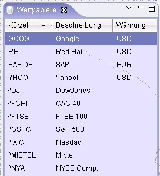

Das Wertpapier Fenster zeigt alle verfügbaren Wertpapiere in einer Liste an. Von diesem Fenster aus künnen Charts und Nachrichten für jedes Wertpapier öffnen.

Ein Rechtsklick auf eines der Wertpapiere zeigt ein Kontextmenü mit den verfügbaren Aktionen wie die Anzeige eines historischen Charts oder die Anzeige der Nachrichten an.
Klicken Sie auf einen der Spaltenköpfe, um die Wertpapiere nach einer der Spalten zu sortieren!